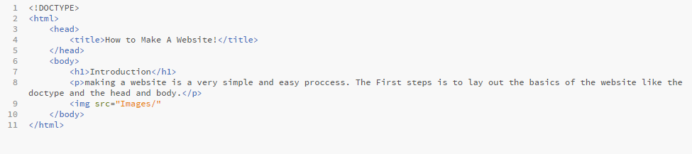
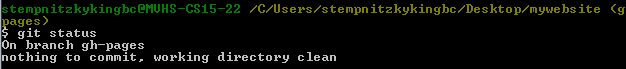
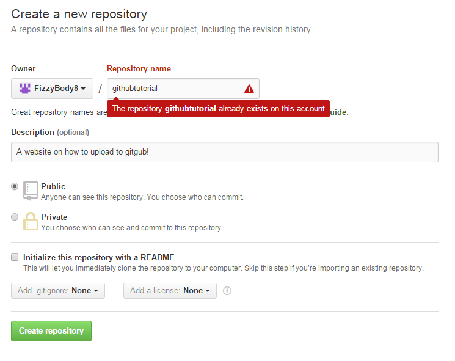

Introduction
making a website is a very simple and easy proccess. The First steps is to lay out the basics of the website like the doctype and the head and body.

Here is a list of some basic elements to start with.
- !DOCTYPE html with brackets.
- head wich includes the title of the website and the link to your css.
- The make the body wich will include the majority of your website like text, images, videos, colors, fonts, etc.
- Also Dont forget the opening and closing brackets of what the text is going to be like a p for paragraph.
List
List are a very useful structure for a website and help organize things.
- Use ol for ordered lists.
- Use ul for unordered lists.
- inside either ol or ul should be li for list.
How to Upload your website to Github!
Uploading to git hub is very usfull for collaberating with friend and colleges on a coding project.
Steps to upload to GitHub.
- Search Git Bash on google and download the software.
- Once the software is downloaded go to the folder were your code is located and right click inside the folder and click git bash.
- A comand line will pop up "don't be afraid it is fairly easy. Inside the command line type "git init
".
- After that type "git checkout -b gh-pages".
- After that type "git status".
- You will then see all the files in the follder in red wich means the files are not added.
- To add the files type "git add "FILENAME HERE" do this for all the red files listed.
- After that type "git status" again to see if it worked.
- If you add things to your code your are going to want to type "git commit -m "MESSEGE"" that way everything is updated.
- Then type "git status" and everything should be white.

- Once everything looks like the above image you are almost done but need to go to Github.com and make a repository by clicking the plus icon in the right hand corner.
- Then fill out the required parts.

- Then you want to copy the first line of text on the part that says "…or push an existing repository from the command line" and click insert to paste it into the command line.
- Then type "git push -u origin gh-pages"
- Type your username and password and click enter.
- Thats it now to access your website type in the url bar "USERNAME".github.io/"REPOSITORY NAME"
All Pictures
YOU DID IT! You uploaded to Github using the command line!